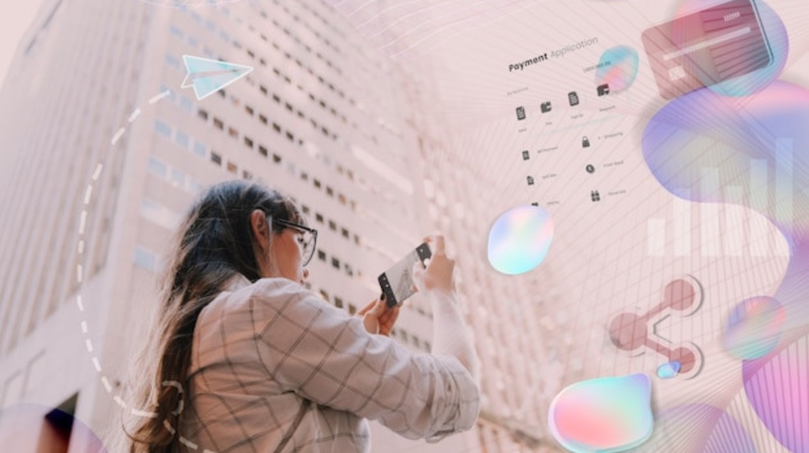

2025년, 브랜드 건강검진

2025년의 소비자 트렌드 : 고객 중심, 지속가능성, AI 와 디지털 최적화의 해
새로운 한해가 시작되었습니다.
2024년까지 이어져온 포스트 팬데믹 여파는, 어느덧 소비자 문화의 디지털 최적화 안정기에 접어든듯 보입니다.
디지털 전환이 가속화는 디지털 소비형태가 낯선 어르신에부터 전연령이 온라인환경에 적응하는 기회를 만들었고, 언택드 서비스 산업을 증가시켰습니다.
친환경과 웰빙등 기업의 사회적 책임에 민감하게 반응하며 지속가능성에 대한 관심은 단순한 트렌드가 아닌 문화로 정착되어 가고 있습니다.
소비자의 경험과 자극에 대한 욕구가 반영된 오감 마케팅 또한 2024년 1,400여회가 넘는 전례없는 체험형 "팝업스토어"의 해로 이끌었습니다. 온오프 라인에서의 소비자 통합경험의 중요성은 간과할수 없는 보편적 전략이 되어가고 있는 듯 합니다.
더하여, 생성형 AI의 출현은 2025년에도 소비자 시장의 큰 트렌드의 축으로 문화를 이끌어 갈 예정입니다.
생성형 AI는 여전히 성장중이며 이제 컨텐츠 제작이나 전문적인 영역을 넘어서 소비자 구매와 서비스 경험에까지 보편화되며 대중화되고 있습니다. AI알고리즘을 적용한 소프트웨어등으로 초개인화 서비스가 점점더 강화됩니다.
헤일로는 이러한 소비자시장을 반영하여, 2025년 소비자 트렌드를 고객중심(Customer-Centric), AI 및 디지털 최적화(AI & Digital Optimization), 브랜드 핵심가치 함양(Brand Core Value), 그리고 지속 가능성(Sustainability) 라는 4가지 키워드로 축약해 보았습니다.
변화된 시장에서 브랜드가 건강하게 유지되고 성장하기위해서는 이 세가지 축으로 우리 브랜드를 점검해야할 사항들은 무엇이 있을까요?
브랜드 점검사항 1 : 고객 중심 (Customer-centric)
고객경험을 중심으로 브랜드를 구축하는 것은 필수에 가깝습니다. 우리브랜드가 고객 중심을 위해 어떤 대응을 준비하고 있는지 체크합니다.
⚪️ 우리 브랜드는 고객의 피드백을 정기적으로 반영하고 있는가?
지속적인 설문조서와 리뷰분석, 소셜 미디어 모니터링을 통해 고객의 목소리를 듣고, 개선하고 있나요?
⚪️ 고객이 브랜드와 적극적으로 소통할 수 있는 채널이 마련되어 있나요?
이메일, 챗봇, SNS, 라이브채팅등 다양한 고객 커뮤니케이션 채널을 운영하고 있나요?
⚪️ 초개인화 서비스 전략이 있나요? : AI를 활용한 맞춤형 추천, 개인화 마케팅, 소비자 행동 분석등을 실행하고 있나요?
브랜드 점검사항 2 : AI & 디지털 최적화 수준 (AI & Digitalization)
AI와 디지털 기술을 활용한 최적화는 브랜드 경쟁력을 유지하는 중요한 요소입니다.
검색 엔진 최적화(SEO), AI 기반 챗봇, 고객 맞춤형 추천 시스템 등의 도입 여부가 경쟁력에 영향을 미치고 있습니다.
⚪️ AI 활용을 브랜드 운영에 적극 활용 : AI 기술을 활용하여 고객 분석, 마케팅 자동화, 개인 맞춤형 서비스 제공 등 혁신적인 경험을 제공하는가?
⚪️ 디지털 전환을 위한 준비는? : 온라인 플랫폼 강화, 디지털 마케팅 전략 고도화 등 디지털 환경에 최적화된 시스템을 구축했는가?
⚪️ 데이터 기반 의사 결정: 고객 데이터, 시장 데이터 등 다양한 데이터를 분석하여 의사 결정에 활용하는가?
브랜드 점검사항 3 : 우리 브랜드의 핵심 메세지는 명확히 전달되고 있는가?
시대를 넘어서, 메세지는 브랜드존재감을 소비자에게 명확하게 인식시켜주는 요소이기에 무엇보다 중요할 수 있다고 할수 있습니다. 명로하고 함축적인 우리 브랜드가 표방하는 메세지를 일관되게 전달하고 있는지. 시대에 부합한지를 내부적 그리고 외부적으로 확인해 봅니다.
⚪️시대 적합성: 브랜드의 핵심 가치가 시대 흐름과 고객의 가치관에 부합하는가?
⚪️ 차별성: 경쟁 브랜드와 차별화되는 고유한 가치를 가지고 있는가?
⚪️ 소비자인식 : 고객이 우리 브랜드를 인식할때 떠올리는 단어를 조사해 일관성이 있는지 확인합니다.
⚪️ 일관성 : 온오프 매체를 통해 전달되고 있는 우리 브랜드의 메세지가 일관적인지?
브랜드 점검사항 4 : 오감 마케팅과 소비자 경험 (Sensory Marketing & Consumer Experience)
오프라인과 온라인을 넘나드는 몰입형 브랜드 경험은 소비자의 충성도를 높이는 핵심 전략입니다.
⚪️ 온-오프라인 통합 경험: 온라인과 오프라인 경험을 통합한 옴니채널을 통해 시너지를 창출하고 있는가?
⚪️ 오감 마케팅: 고객의 오감을 만족시키는 다양한 마케팅 활동을 전개하는가?
⚪️ 체험 마케팅: 고객에게 잊지 못할 브랜드 경험을 제공하는 체험형 마케팅을 적극적으로 활용하는가?
브랜드 점검사항 5 : 브랜드의 사회적 책임 요소 점검 (ESG)
지속 가능성을 고려한 브랜드 전략이 없으면 신뢰를 잃을 수 있는 시대에 우리 브랜드는 환경적, 사회적 책임을 다하고 있는지 점검해볼 사항입니다.
⚪️친환경 경영: 제품 생산 과정, 포장재, 물류 등 전반에 걸쳐 친환경적인 노력을 기울이는가?
⚪️사회적 책임: 사회 문제 해결에 적극적으로 참여하고 윤리적인 경영을 실천하는가?
⚪️투명한 정보 공개: 지속가능성 관련 정보를 투명하게 공개하고 고객과 소통하는가?
정기적인 브랜드 전략 리뷰는, 생존을 위한 활동
브랜드가 시대와 함께 성장하며 살아남기 위해서는, 정기적인 점검과 혁신이 필수적입니다.
위의 체크리스트를 활용하여 2025년 트렌드에 맞춘 전략의 강점과 보완점을 분석보완하고, 브랜드 전략을 수립해보는 것이 어떨까요?
이미지 출처:freepik
더 많은 내용이 궁금하다면 👉: https://brunch.co.kr/@dreamasdream/37